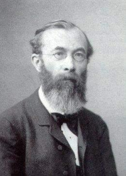
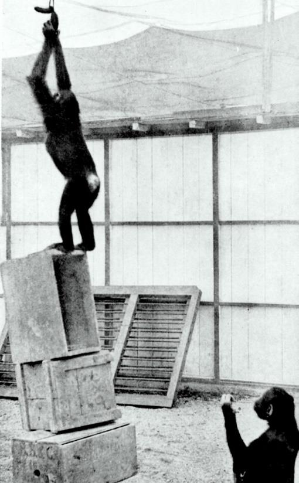
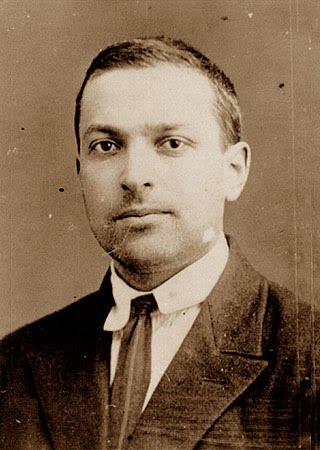
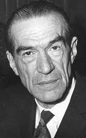
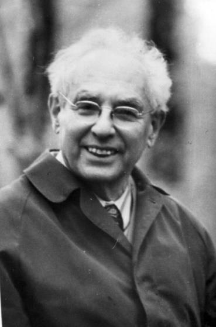
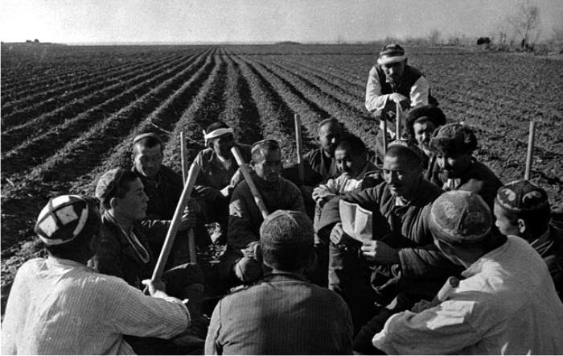
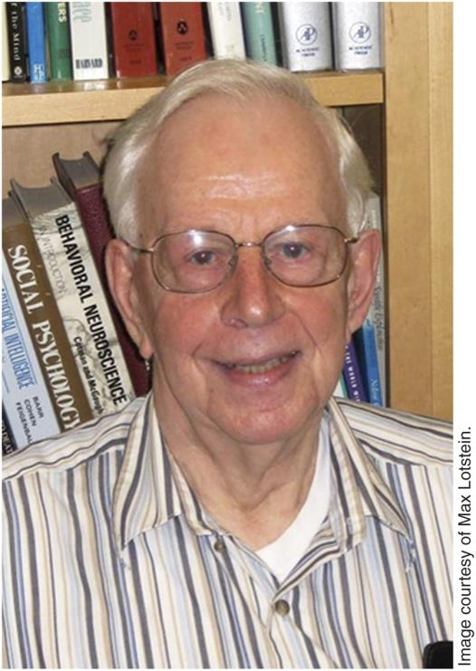
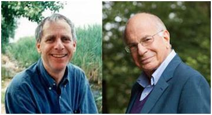

Facultad de Ciencias Humanas
y de la Conducta
Procesos Básicos III · Clase 1
Psicología del
pensamiento
Dr. Fernando Tonini
¿Qué cuenta como pensar?
Elegí dos situaciones. ¿Qué tienen en común?
Recordar una contraseña
Resolver un acertijo
Elegir una materia optativa
Interpretar una consigna ambigua
Imaginar una escena futura
Repetir una definición de memoria
¿Pensar exige conciencia? ¿Siempre tiene una meta?
¿Es lo mismo pensar que razonar?
El recorrido de hoy
- Delimitar el campoPensamiento, razonamiento, problemas y decisiones.
- Reconstruir una historiaQué estudia cada enfoque y cómo obtiene evidencia.
- Comparar explicacionesReglas, representaciones, contexto y emoción.
- Aplicar los conceptosAnalizar una misma situación desde distintas perspectivas.
Una definición de trabajo
Pensar implica operar sobre información y representaciones para comprender, inferir, resolver problemas y elegir cursos de acción.
No designa una única operación mental.
Su definición depende de qué procesos queremos explicar.
Tres grandes áreas
Razonamiento
Inferir una conclusión
a partir de información.
Solución de problemas
Alcanzar una meta cuando
el camino no es evidente.
Toma de decisiones
Elegir entre alternativas
con distintas consecuencias.
En una situación real, estos procesos pueden combinarse.
Dos formas de inferir
Razonamiento deductivo
Si la inferencia es válida, la conclusión se sigue necesariamente de las premisas.
Todos los mamíferos son vertebrados.
Los delfines son mamíferos.
Razonamiento inductivo
La información apoya una conclusión que puede revisarse ante nueva evidencia.
En varias clases, practicar con ejemplos
me ayudó a comprender.
Necesidad lógica y apoyo probable son criterios diferentes.
Un problema y una decisión
Solución de problemas
Hay una meta, pero no disponemos de un procedimiento inmediato para alcanzarla.
¿Cómo organizar un plan de estudio posible?
Toma de decisiones
Hay alternativas que evaluamos según sus consecuencias, metas y restricciones.
¿Repaso lo que domino o trabajo sobre lo que me cuesta?
Que una tarea sea un problema depende también del conocimiento de quien la enfrenta.
Dos preguntas diferentes
Modelos normativos
¿Cómo debería razonar o decidir una persona?
Establecen criterios de validez, probabilidad o elección.
¿La conclusión se sigue de las premisas?
Modelos descriptivos
¿Cómo razona o decide efectivamente?
Explican procesos, estrategias y errores en condiciones concretas.
¿Por qué aceptamos una conclusión que no se sigue?
Antecedentes filosóficos
¿De dónde viene
el conocimiento?
Razón y experiencia
Racionalismo
Platón · Descartes
La razón ocupa un lugar central en el acceso al conocimiento.
La experiencia sensible no basta para justificar todo lo que conocemos.
Empirismo
Locke · Hume · Berkeley
La experiencia es una fuente fundamental del conocimiento.
Las ideas y sus asociaciones se vinculan con lo experimentado.
¿Qué aporta el sujeto y qué aporta la experiencia?
Conocer supone organizar
Immanuel Kant
El conocimiento requiere experiencia y una actividad del sujeto que organiza lo conocido.
El sujeto no recibe información de manera puramente pasiva.
La pregunta se desplaza hacia las condiciones que hacen posible conocer.
¿Cómo estudiar algo que no se ve?
El pensamiento se infiere a partir de indicadores.
Tarea
Una consigna, un problema
o una elección.
Datos
Respuestas, tiempos,
errores y verbalizaciones.
Explicación
Una hipótesis sobre
los procesos implicados.
La teoría orienta qué datos buscamos y cómo los interpretamos.
Historia de la psicología
Del contenido
al proceso
La conciencia como objeto científico

Experiencia inmediata
Estudiar la conciencia mediante observación controlada bajo condiciones experimentales.
El límite del laboratorio
Los procesos superiores plantean dificultades para este método. Sus productos culturales ofrecen otra vía de estudio.
La pregunta por el pensamiento también es una pregunta por el método.
¿Pensar es tener imágenes?
Estructuralismo
Edward Titchener
Analizar la experiencia consciente en elementos, como sensaciones e imágenes.
Método: introspección analítica.
Escuela de Würzburgo
Oswald Külpe
Estudiar el pensamiento dirigido a metas y la posibilidad de pensar sin imágenes conscientes.
Método: informes retrospectivos en tareas experimentales.
¿Cómo comprobar y replicar los informes sobre la experiencia interna?
¿Para qué sirve pensar?
Funcionalismo
El interés pasa de los contenidos de la conciencia a la función de los procesos mentales en la adaptación.
¿Qué demanda del medio enfrenta la persona?
¿Cómo contribuye el pensamiento a orientar su acción?
La conducta como punto de partida
Thorndike
Estudia el aprendizaje en tareas de solución de problemas y los efectos de las consecuencias.
Watson
Busca una explicación objetiva del pensamiento; lo vincula con el lenguaje subvocal.
Skinner
Analiza la conducta verbal en relación con sus condiciones y consecuencias.
El foco está en relaciones funcionales entre conducta, ambiente e historia de aprendizaje.
Una solución puede exigir reorganizar
Gestalt · Wolfgang Köhler
La relación entre los elementos del problema puede cambiar.
El insight designa una comprensión súbita de una organización que permite resolverlo.
No basta con enumerar los elementos: importa cómo se representan sus relaciones.

Repetir una solución o crear otra
Pensamiento reproductivo
Aplicar procedimientos o soluciones ya conocidas.
Pensamiento productivo
Reestructurar la situación para encontrar una solución nueva.
¿Cómo distinguir un cambio de representación de una nueva respuesta por ensayo?
Pensamiento, lenguaje y cultura
Vigotsky · Luria · Leontiev
El pensamiento se desarrolla en actividades sociales mediadas por herramientas y signos.
El lenguaje, la experiencia cultural y las prácticas de aprendizaje forman parte de la explicación.
La tarea tiene una historia y un significado para quien la resuelve.




Representaciones y operaciones
Procesamiento de la información · Newell y Simon
la situación.
revisión de pasos.
el objetivo.
Un sistema con límites
La arquitectura cognitiva restringe lo que puede procesarse.
Métodos de estudio
Tareas, protocolos verbales y simulaciones computacionales.
Mismo fenómeno, distintas preguntas
| Enfoque | Qué busca explicar | Qué observa o analiza |
|---|---|---|
| Conciencia / estructuralismo | Experiencia y contenidos conscientes | Informes bajo condiciones controladas |
| Würzburgo | Pensamiento orientado por tareas | Informes retrospectivos y desempeño |
| Funcionalismo | Función adaptativa | Procesos en relación con demandas |
| Conductismos | Aprendizaje y relaciones funcionales | Conducta, condiciones y consecuencias |
| Gestalt | Reestructuración y solución productiva | Organización de la tarea y resolución |
| Sociocultural | Mediación y desarrollo | Actividad, lenguaje y contexto |
| Procesamiento de información | Representaciones y operaciones | Tareas, protocolos y simulaciones |
Modelos contemporáneos
¿Qué guía nuestras
inferencias y elecciones?
Razonar mediante reglas
Modelos formales del razonamiento
La propuesta
Inferir mediante reglas aplicadas a la estructura de las premisas.
La pregunta psicológica
¿Cómo se comprenden las premisas y se aplican esas reglas?
Conocer una regla lógica y explicar su uso son problemas diferentes.
El contexto puede cambiar la tarea
Esquemas pragmáticos
La experiencia permite construir esquemas para situaciones de permiso, obligación o causalidad.
Contrato social
Una propuesta explica ciertos razonamientos sobre intercambios sociales y detección de incumplimientos.
El significado de la regla puede influir en cómo se interpreta y verifica.
Razonar sobre posibilidades

Construimos representaciones de situaciones compatibles con las premisas.
A está a la izquierda de B.
B está a la izquierda de C.
Una conclusión válida debe sostenerse en todas las posibilidades compatibles con las premisas.
Decidir con información limitada
Heurísticos
Estrategias simplificadas que reducen el esfuerzo de evaluación.
Sesgos
Patrones sistemáticos de juicio que pueden apartarse de un criterio de referencia.

Una estrategia puede ser útil y producir errores bajo ciertas condiciones.
Ganancias y pérdidas no son equivalentes
Teoría de las perspectivas · Kahneman y Tversky, 1979
Las decisiones bajo riesgo dependen de cómo se evalúan los resultados respecto de un punto de referencia.
Como ganancia
Un resultado puede vivirse como una mejora respecto de lo esperado.
Como pérdida
Ese mismo resultado puede vivirse como un retroceso respecto de otra expectativa.
Importa el resultado y también el marco con el que lo comparamos.
La emoción participa en la decisión
Hipótesis del marcador somático
Las señales corporales y emocionales asociadas a experiencias previas pueden orientar la evaluación de alternativas.
Una opción puede anticiparse como favorable o desfavorable antes de una comparación explícita de todas sus consecuencias.
La emoción es parte de la explicación psicológica de la elección.
Volvamos a la pregunta inicial
¿Qué cambiarías ahora en tu definición de “pensar”?
El campo reúne procesos diferentes que pueden actuar juntos.
Cada enfoque relaciona una explicación con una forma de obtener evidencia.
Reglas, representaciones, contexto y emoción abren preguntas distintas.
Próxima clase: razonamiento deductivo.
¿Aceptar una conclusión significa que la inferencia es válida?
Lecturas y procedencia
Bibliografía obligatoria
González Labra, M. J. (2019). Psicología del pensamiento: esbozo histórico. En Psicología del pensamiento, capítulo 1. Sanz y Torres.
Abrir bibliografía obligatoria